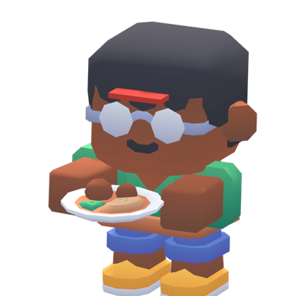

A small taverna in an Aegean seaside town. Growing it is up to you.
Ege'de bir sahil kasabasında küçük bir lokanta. Büyütmek sana kalmış.

Need a hand?
Yardım mı lazım?
Write to us about a bug, a lost purchase or an idea for the game. We read every message.
Bir hata, kaybolan bir satın alma ya da oyun için bir fikir için bize yaz. Her mesajı okuyoruz.
Email supportDestek'e e-posta gönderOpens your mail app, addressed toPosta uygulaman açılır, alıcı: devfsk202@gmail.comInclude these and we can help faster
Şunları yazarsan daha hızlı yardım ederiz
- Your device model (for example, iPhone 15)
- Your iOS version (Settings → General → About)
- What you were doing when the problem happened
- Cihaz modelin (örneğin iPhone 15)
- iOS sürümün (Ayarlar → Genel → Hakkında)
- Sorun olduğunda oyunda ne yapıyordun
Common questions
Sık sorulanlar
I bought something on another device. How do I get it back?
Open Settings in the game and tap "Restore purchases". Use the same Apple ID you bought it with.
Do I have to watch ads?
No. Ads only play when you choose to watch one for a reward, and you can always skip the reward.
Can I turn off personalized ads?
Yes. Open Settings in the game and change your privacy choices. Rewards stay the same either way.
How do I start over or delete my data?
Open Settings in the game and tap "Reset save", or uninstall the game. Your progress is stored only on your device.
Başka bir cihazda satın aldığım şeyi nasıl geri alırım?
Oyunda Ayarlar'ı aç ve "Satın alımları geri yükle"ye dokun. Satın alırken kullandığın Apple ID ile giriş yapmış ol.
Reklam izlemek zorunda mıyım?
Hayır. Reklam yalnızca sen ödül için izlemeyi seçersen oynar; ödülü almadan da devam edebilirsin.
Kişiselleştirilmiş reklamları kapatabilir miyim?
Evet. Oyunda Ayarlar'dan gizlilik tercihlerini değiştir. Ödüller her iki durumda da aynıdır.
Baştan nasıl başlarım ya da verilerimi nasıl silerim?
Oyunda Ayarlar'dan "Kaydı sıfırla"ya dokun ya da oyunu sil. İlerlemen yalnızca cihazında saklanır.